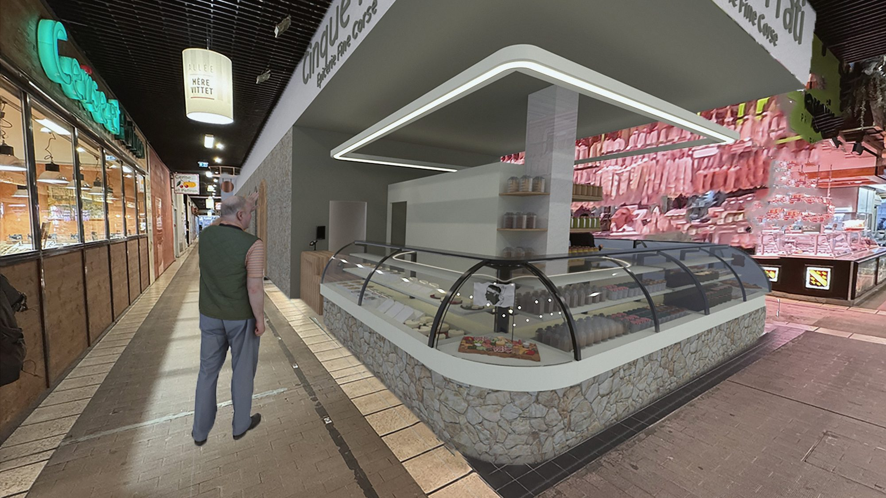
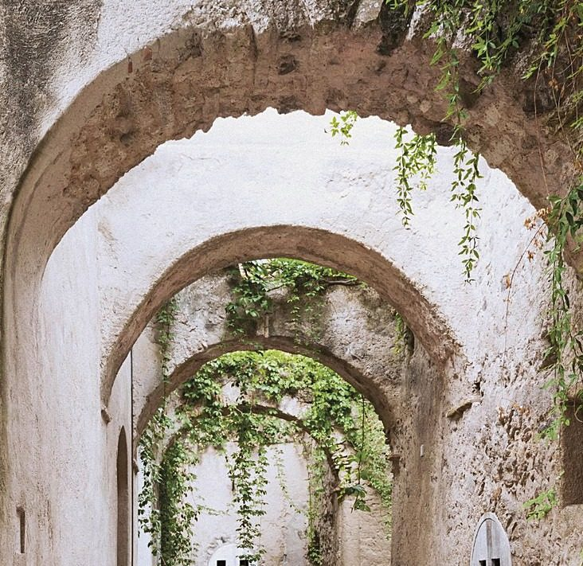
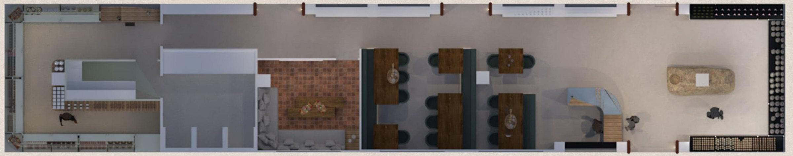
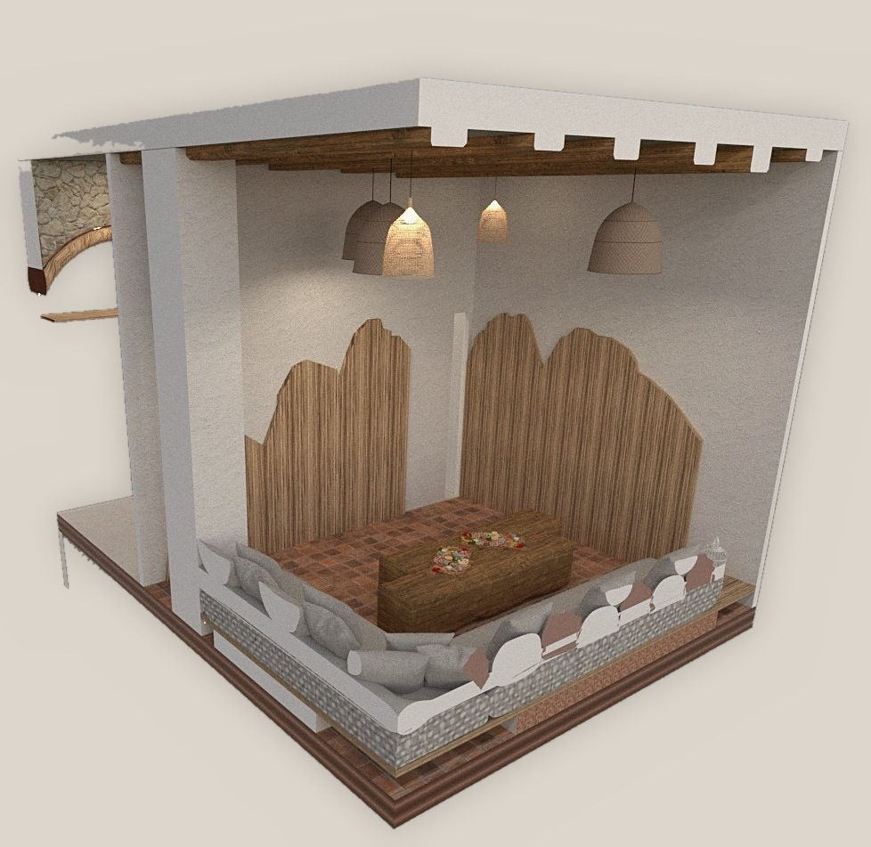

Le lieu · architecture intérieure
Un villagedans les Halles.
Comment faire tenir l'esprit d'un village de montagne dans 181 m² d'un marché couvert ? Réponse en quatre matières et une courbe.
181 m²au cœur des Halles
4zones : présentoir, comptoir, salon, préparation
12convives au salon
1courbe : l'arche
Le concept
Fusion.
La tradition corse rencontre la modernité lyonnaise. Les arches cadrent, la pierre ancre, le bois réchauffe, le béton ciré relie.


Matières
Quatre matières.

Pierre locale
Le socle du stand et les murs des arches. Elle ancre.

Châtaignier brut
Étagères, tables, assises. Il réchauffe.

Béton ciré
Le sol et les plans. Il relie.

Verre
Vitrines et verrière. Il laisse voir.
Le parcours
Quatre zones, un seul mouvement.
On entre sous l'arche, on découvre le présentoir, on s'arrête au comptoir, on s'installe au salon.




Crédit
Conception Baptiste Linet.
Projet APD, avril 2025. Épicerie fine et dégustation, Halles de Lyon Paul Bocuse, 102 cours Lafayette, Lyon 3e.